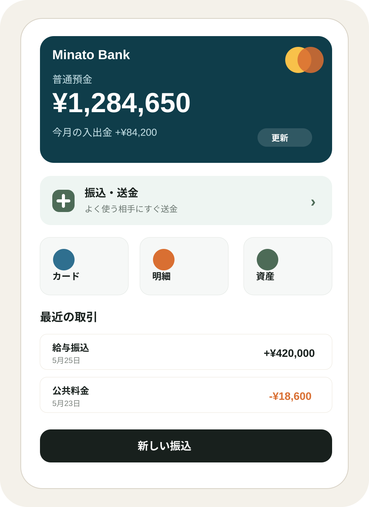
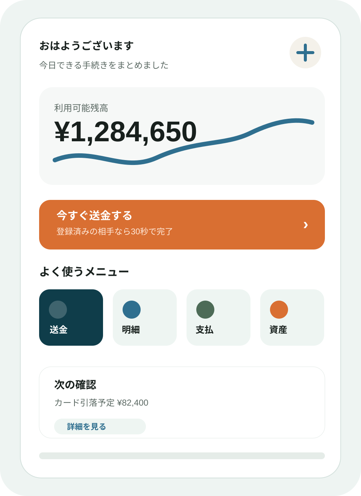

UI案 A / 残高中心型
疑似アップロード済み: banking-home-a.png

毎月確認したい91
安心して見られる88
毎日開きたい62
銀行インターネットバンキング利用者に近い20人のAIペルソナが、トップページA/Bを設定した評価軸で比較。社内の感覚だけで決めがちなUI/UX判断を、ユーザー調査前の仮説に変換します。


日常接点化はB、月次確認と安心感はA。単純な勝敗ではなく、狙う利用頻度で評価が分かれる。